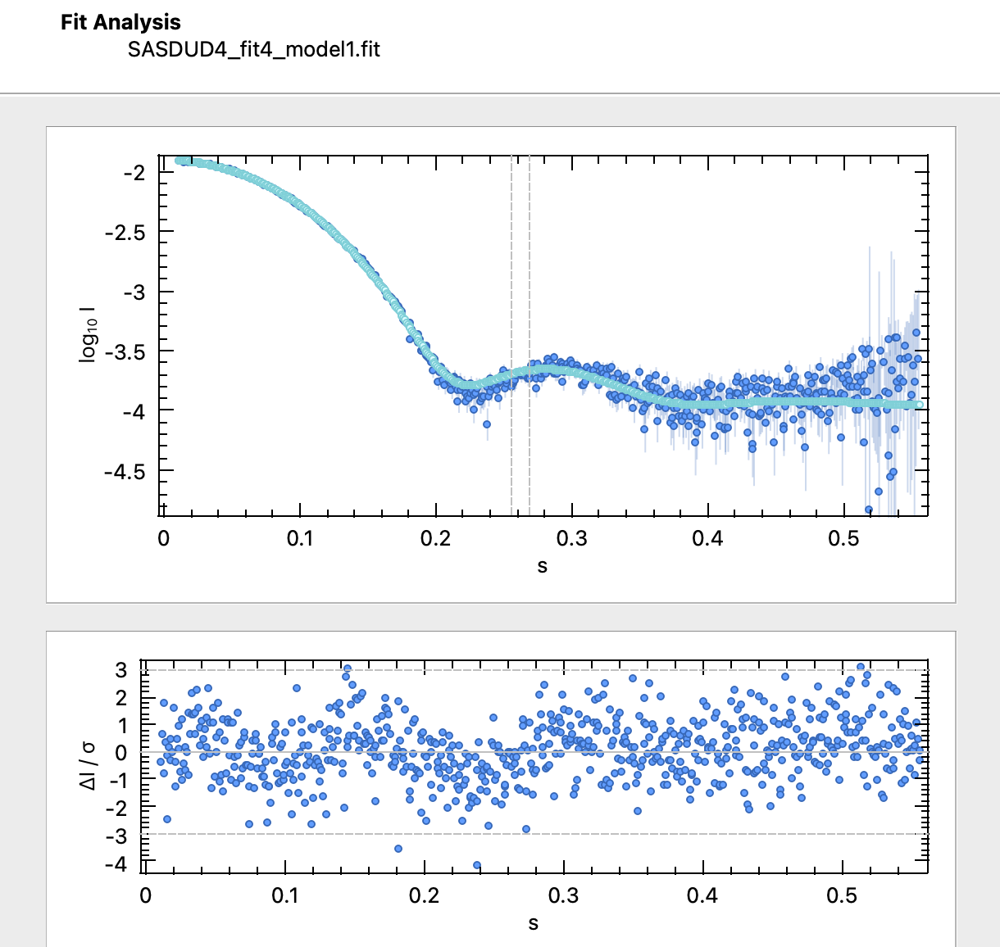

Home
Tutorial: Proteins
Contributors: Andreas Haahr Larsen
The atomic structure of Rnase A and the surrounding water density. Adapted from Chatzimagas and Hub, 2022.
Before you start
- You can complete the tutorial without any installation, but to get full learning experience you need to install the software packages that are listed in Part II.
- If you are new to small-angle scattering, we recommend that you do the Shapes tutorial first.
- It is also a good idea (but not required) to do the Primary Data Analysis tutorial.
Learning outcomes
Learn how to verify the solution structure of proteins in solution.- Determine the oligomeric state of a protein with SAXS.
- Understand how SAXS data can be used to determine the structure of a protein.
- Explain what parameters are fitted in the process.
Introductory remarks
One of the main applications of SAXS is the determination of protein structures. SAXS can be used to test whether the crystal structure of a protein is also the solution structure, it can tell the oligomeric state of the protein, and it may even be used to determine the (low resolution) structure, if no high-resolution models are available.
SAXS is also sensitive to the change in density of the water around the protein, so this should be included in the model, and SAXS can be used to examine water packing around macromolecules.
Part I: Check the oligomeric state of a protein
In this exercise, you have measured a SAXS dataset of the protein Xylanase and wish to find out if it is in its monomeric state. You know its molecular mass is approximately 21 kDa, as calculated from the chemical composition.You can test this by estimating the molecular weight from the data. There are several ways to do this), some of which require a reference sample and/or a good concentration estimate.
Here, we will use the scattering invariant combined with the SAXSMoW empirical method (Piiadov et al, 2018) as implemented in BayesApp.
- Go to BayesApp and upload the structure
- Check the "Kratky Plot" box and select "Calculate Mw from the Kratky plot"
- Press Submit
Looking at the pair distribution distribution (see also the tutorials: Primary Data Analysis and Pair distance distribution), there is a shape characteristic for globular (near-spherical particle), and a small "tail", extending the dmax to approximately 50 Å, which is a sign of minor dimer contribution.
Background matters!
Note that Mw estimation using this method is sensitive to background subtraction. BayesApp attempts to estimate the background level, and therefore reach a reasonable value.
But try the SAXSMoW web application, which trust the background subtraction without adjustments, gives a Mw of 15 kDa, which is similar to what you get in BayesApp, if the background is not fitted (try that, under Advanced options). So do always check the background subtraction carefully when estimating Mw using the scattering invariant.
Part II: Calculate the scattering from a protein structure and compare with data
In this exercise, you have measured a SAXS dataset of the protein Xylanase and wish to find out if it matches with the crystal structure (PDB 2DFC).To do this, you can use one of several programs, including (not a complete list):
- Pepsi-SAXS*, which can be installed and run locally (in the terminal) or run through a web application.
- CRYSOL*, which is available as part of the ATSAS program, which you may install and run (short guide) or run through ATSAS online (login required).
- PDB2SAS, which is part of the DENSS software package can be run in the terminal by installing DENSS, or as a GUI in BioXTAS RAW (guide to run PDB2SAS in RAW).
- SAXS fitter, which can be installed through the AUSAXS software.
- FoXS, which can be run online.
- WAXSiS, which can be run through the WAXSiS (accurate but slow! - could take 20 minutes or more).
They all calculate the scattering from the PDB file, using different strategies, and can all fit this calculated scattering with a user-provided SAXS curve.
Try one or more of these programs to calculate the scattering from the PDB file and compare it (fit to) your SAXS data.
Does the atomic structure fit the data?
Part III: Assess your fit quality
To assess whether your fit is good, you should consider several aspects:- does you fit look good, visually?
- Some programs also display the residuals (difference between data and fit, usually normalized by the experimental errors, $\DeltaI/\sigma$). They highlight differences - do you see any systematic differences?
- Is the $\chi^2$ close to 1?
- Are the parameters reasonable (see parameter overview and table below). Should you opt for fitting more parameters, or maybe fix or limit some?
- Parameters fitted in programs for calculating SAXS from protein structures:
- Scaling of I(0): Depends on concentration, and oligomeric state. If the data is on absolute scale this could be disabled, but in practice, it is always fitted in these programs.
- Constant background: This accounts for small inaccuracies in background subtraction and a small incoherent self-term contribution which is not always taken into account in the models. Generally it is recommended to fit this parameter (Trewhella, Vachette and Larsen 2024). In SANS, this effect is much larger due to incoherent scattering.
- Hydration layer density: The water closest the protein (the hydration shell) is more ordered than bulk water, and therefore more compact (higher electron density). This effect vary with the protein type due to factors like surface charge and foldednes, and is accounted for in all programs, but in different ways. It is usually adjusted by a fitting parameter, which is often denoted $\delta\rho$ (see, e.g., Chen and Hub 2014 or Trewhella, Vachette and Larsen 2024 or Lytje and Pedersen 2025 or Chamberlain, Moore and Grant 2023).
- Excluded volume: The protein and its hydration shell take up some space that would otherwise be occupied by bulk water. This excluded volume is always accounted for and sometimes adjusted by a fitting parameters (see, e.g., Lytje and Pedersen 2025 or Chamberlain, Moore and Grant 2023).
- Solvent density: The electron density of the solvent vary with salt and sucrose content. This can be manually adjusted or fitted and affects the scattering.
| Program | I(0) | Background | Hydration layer density | Excluded volume | Solvent density |
|---|---|---|---|---|---|
| Pepsi-SAXS | yes | optional | yes | yes | no |
| CRYSOL (ATSAS) | yes | optional | yes | yes | no |
| PDB2SAS (DENSS) | yes | optional | yes | no | yes |
| SAXSfitter (AUSAXS) | yes | optional | yes | no* | no |
| FoXS | yes | optional | yes | yes | no |
| WAXSiS | yes | yes | no | no | no |
| *excluded volume can be calculated in different ways in SAXSfitter, and if opted for, it may be fitted (Lytje and Pedersen, 2025). | |||||

Challenges
- Challenge 1: You have measured a sample of Bovine Serum Albumin (BSA) with SAXS. You know its Mw is approximately 66.5 kDA, and you have tried to purify the monomer - did you succeed? You may compare with the monomer and dimer structures.
- Challenge 2: You have measured the protein Cupredoxin Plastocyanin (Pc) in SAXS in a buffer with NaCl and a buffer with ZnAcetate and suspect that the ion type affects Pc's oligomeric state. Use the following structures to test the hypothesis: monomer crystal structure, side-by-side dimer, top-by-top dimer, trimer generated with the AlphaFold server.
Perspectives
- Traditionally, it has been very popular to attempt to get the structure directly from SAXS data (ab initio) - instead of having a protein structure and testing this against data. This can, e.g., be done with DAMMIF (ATSAS) or DENSS, but with AlphaFold and advances in electron microscopy, this approach is less relevant today.
- SAXS can also be used to verify/test EM maps directly, see the tutorial on that.
- These methods cannot be applied to membrane proteins due to detergents, unless the detergents are contrast matched in SANS.
- This tutorial dealt with soluble folded proteins. Other relevant classes of proteins are intrinsically disordered proteins, whose flexibility should be taken into account by modelling an ensemble instead of a single structure.
Help and feedback
Help us improve the tutorials by- Reporting issues and bugs via our GitHub page. This could be typos, dead links etc., but also insufficient information or unclear instructions.
- Suggesting new tutorials/additions/improvements in the SAStutorials forum.
- Posting or answering questions in the SAStutorials forum.